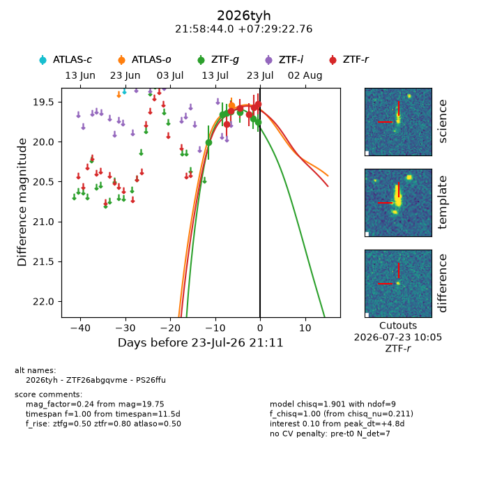
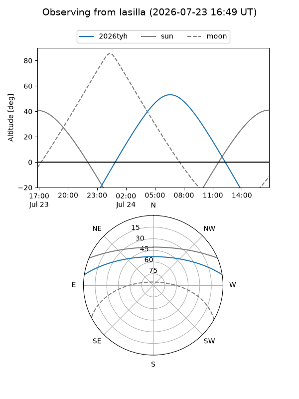
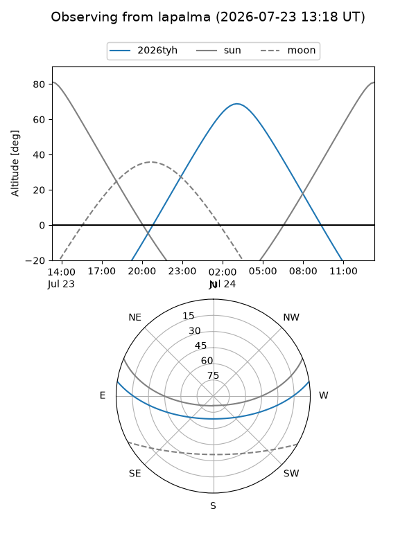
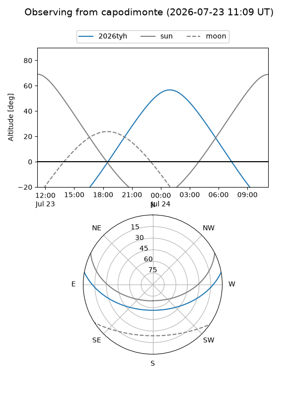
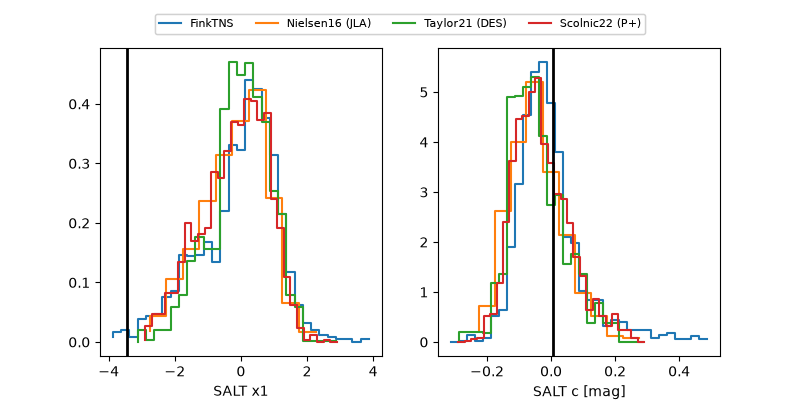

2026tyh
Target 2026tyh at 2026-07-23 21:14
Aliases and brokers:
FINK-ZTF: ztf.fink-portal.org/ZTF26abgqvme
Lasair-ZTF: lasair-ztf.lsst.ac.uk/objects/ZTF26abgqvme
ALeRCE-ZTF: alerce.online/object/ZTF26abgqvme
YSE-PZ: ziggy.ucolick.org/yse/transient_detail/2026tyh
TNS name: wis-tns.org/object/2026tyh
Direct TNS query: direct search
alt names
ZTF26abgqvme (ztf,fink_ztf)
2026tyh (tns,yse)
PS26ffu (panstarrs)
Coordinates:
equatorial (ra, dec) = 329.6832,+7.48965
equatorial (HMS+DMS) = 21:58:43.98,+07:29:22.76
galactic (l, b) = (66.2359,-35.73609)
Flags:
TNS type: nan
peak dt: +4.8
Photometry:
last atlaso=19.54, ztfg=19.75, ztfr=19.52
1 atlaso, 7 ztfg, 6 ztfr detections
Lightcurve

Visibility



Additional plots
